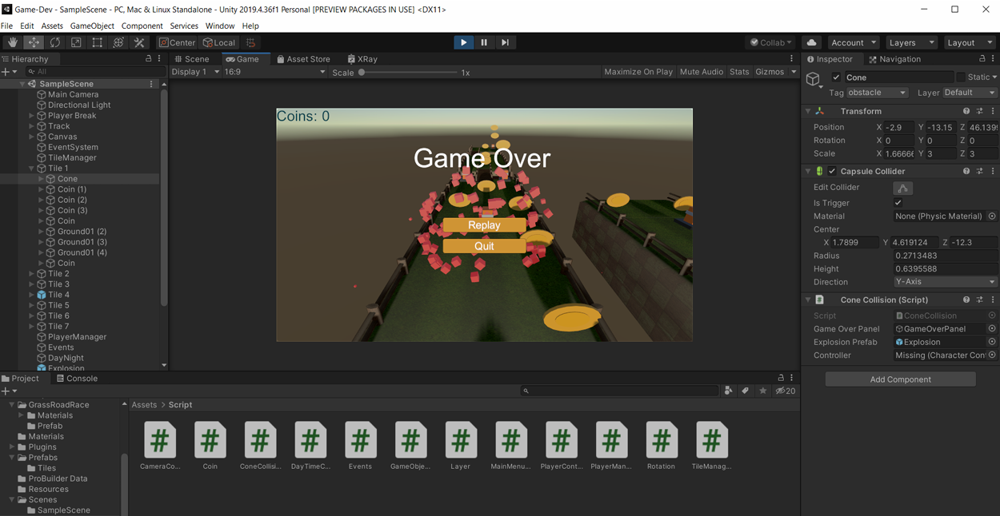
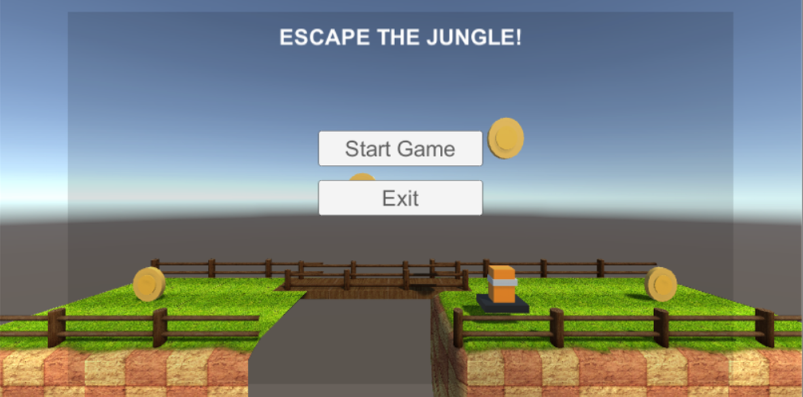
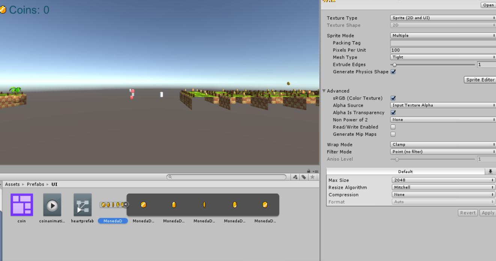

Game Overview
Temple Runner is a Unity-based endless runner where the player sprints through a temple jungle environment, dodging obstacles, collecting gems, and chaining momentum. It was built to explore the full game production pipeline, from 3D modelling in Blender to gameplay systems in Unity.


Unity editor scene setup and the main menu.

The animated jungle terrain the player runs through.
Systems Built
- Player controller: run, jump, and lane-switching mechanics with responsive input.
- Terrain generation: procedurally placed jungle segments for an endless run.
- Obstacles & collectibles: collision handling, scoring, and pickup effects.
- UI & menus: main menu, HUD, and game-over flow.
- 3D assets: terrain and props modelled and animated in Blender, integrated into Unity.
Tech Stack
UnityC#BlenderGame Physics
Key Learnings
- Bridging Blender assets into Unity taught me the importance of clean geometry, pivots, and scale conventions.
- Endless-runner feel comes from tuning, not features; speed curves and camera follow make the game.
- Separating gameplay logic from presentation (MonoBehaviour organisation) keeps a growing game manageable.
"Games teach the hardest software lesson: fun is a feature you must iterate toward."